87%
average experimental accuracy
Student-built accessibility hardware from Suceava, Romania
This project captures hand movement through a glove-based sensing system and converts signed expression into readable text, aiming to reduce communication barriers in social, educational, medical, and legal contexts.
Developed by David Covalschi and Radu Cristian Fediuc under the coordination of Anca Greculeac at Colegiul National Petru Rares Suceava.
87%
average experimental accuracy
5
encoder channels used to read finger motion
4
core development tools listed in the technical dossier
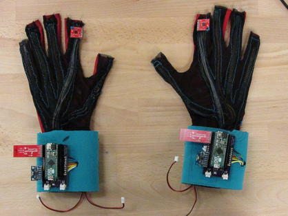
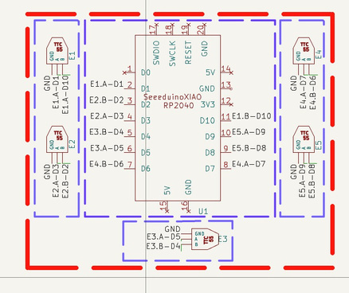
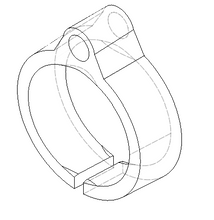
Why this matters
The technical dossier starts from a simple idea: communication is a fundamental human need, yet many systems still revolve around spoken language. For people who rely on sign language, that often means reduced access to information, services, and opportunities.
The glove was conceived as an assistive system that translates Romanian sign language expressions into written Romanian, displayed digitally so the signed message can be understood more easily in real time.
The prototype focuses on practical accessibility: capture motion directly from the hand, interpret it in software, and keep improving the system through experimental testing and hardware refinement.
Capture gesture data from a hand-worn prototype used by a sign language speaker.
Transform the recorded motion data into text that can be displayed clearly.
Verify the prototype experimentally and continue optimizing the device over time.
Study the device's place in the market for assistive and educational technologies.
Prototype logic
The project is built as a complete pipeline: a wearable input layer, custom electronics, embedded code, interpretation software, and experimental validation.
Encoder channels mounted on the glove register finger movement directly at hand level.
A custom board and microcontroller organize the input signals into a usable data stream.
Arduino and Node.js code decode the captured values and map them to readable output.
Results feed back into the design so the glove becomes more stable, precise, and useful.
Engineering the glove
The dossier combines electronics, mechanical design, and software into one coherent wearable system rather than treating translation as a single algorithm problem.
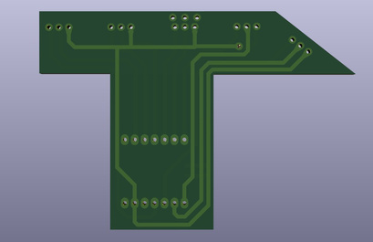
Electronics
The board was developed in KiCad, with component definition, routing optimization, and validation through ERC and DRC checks before the final PCB was produced.
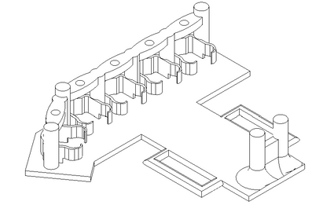
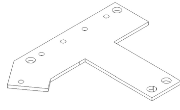
Mechanical design
The wearable structure was modeled in Fusion 360 and then fabricated on a Bambu P1S 3D printer, allowing the team to validate fit and construction decisions in physical form.
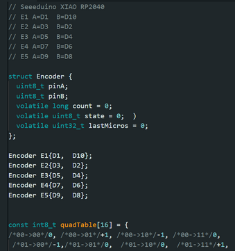
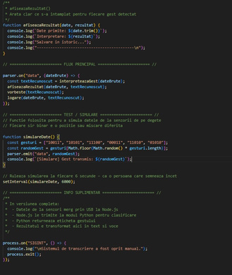
Software
The embedded layer reads encoder values, while a separate JavaScript pipeline interprets the data and transforms it into text output for the user.
Why a wearable approach
The dossier notes that many sign translation systems rely on visual recognition and artificial intelligence. Those approaches can be promising in controlled conditions, but they often depend on lighting, background complexity, camera placement, and more expensive processing hardware.
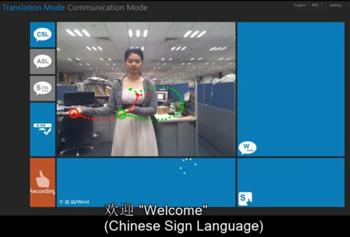
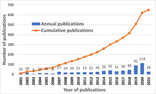
Experimental data
The current prototype demonstrates solid gesture detection performance, with an average accuracy of 87% across the documented tests. The next major improvement identified in the dossier is the use of higher-resolution encoders to reduce reading errors and make finger tracking more stable.
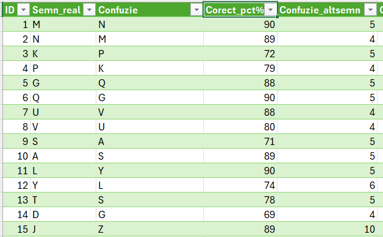
Project outlook
This website presents the current sign translation glove as a serious student-built prototype: technically grounded, visually documented, and clearly positioned for further refinement. The next step is continued testing, sensor upgrades, and broader real-world use.
Back to top